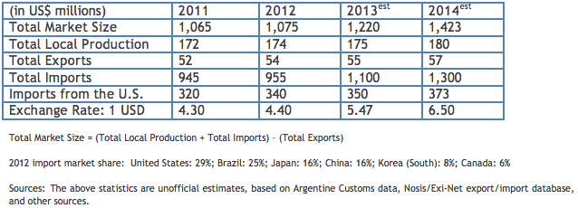

Market Estimates
Overview
Sub-Sector Best Prospects
Opportunities

The mining industry in Argentina continues to expand following a sustained upward trend. Nevertheless, a significant number of mining projects throughout Argentina have not reached full development. Regulatory changes in general investment legislation and in specific mining-sector legislation in the early 1990s favored a significant increase in foreign investment in the industry. The sector’s growth propelled local demand for mining machinery and equipment. Most of the 250+ companies with operations in Argentina reduced their activity level significantly during the economic crisis in order to preserve their assets. Most of the market players are junior companies; however, sector dynamics and industry experts coincide that investments will continue to increase.
Several new mines are expected to be built in this decade, which represent future business opportunities for U.S. suppliers of mining equipment and machinery. Nevertheless, existing mines currently in operation also represent significant potential for the provision of machinery, equipment and parts.
Return to Top
• Mining Industry Equipment
• Mine Safety Equipment.
• Minerals Handling Equipment.
• Mining Equipment: Open Pit
• Mining Equipment: Underground
• Mining Technologies
• Water Treatment and Environmental Protection Technologies
Return to Top
Demand for imported goods is evenly distributed between large digging, leveling, scraping, excavating, quarrying, and earth moving equipment (HS 8430), and equipment for sorting, screening, separating, washing, crushing, and grinding (HS 8474), including healthy volumes of parts and tools (HS 8431 and 8207). Further, high tech equipment, such as GPS, radars, and Wi-Fi data transmission systems are also in demand. U.S. suppliers continue to dominate the market; however, Brazilian, Asian, and Canadian competitors are expanding steadily.
Argentina remains a key market for U.S. exports to Latin America. However, recent controls imposed by the Argentine government have made exporting goods from any country to Argentina more difficult. It is important for would-be exporters to Argentina to confirm that their Argentine customer has received all the necessary permits. (See “Trade Regulations and Standards” report for more information).
Return to Top